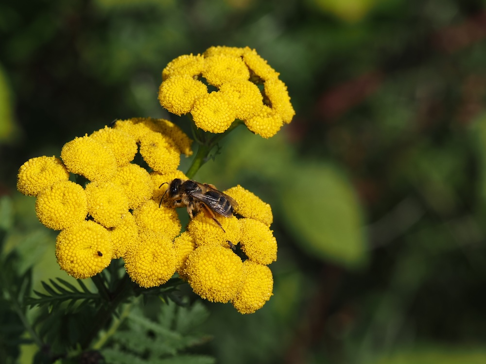
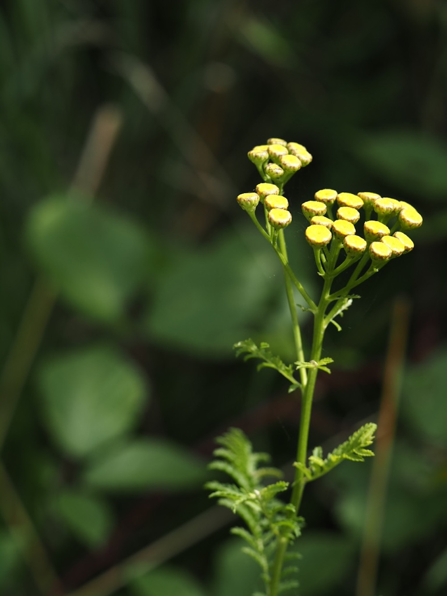

Goldknöpfe mit Knockout-Duft — der Rainfarn vertreibt fast alles.



Ein chemischer Schutzschild
Wer ein Blatt des Rainfarns zerreibt, hat einen sehr eigenen Geruch in der Nase — kampferartig, harzig, intensiv. Diese ätherischen Öle (vor allem Thujon) sind ein perfektes Insekten-Repellent. Mücken, Fliegen, sogar Mottenlarven meiden die Pflanze. Schon im Mittelalter wurden Rainfarn-Sträuße in Vorratskammern aufgehängt — als natürlicher Schädlingsschutz für Mehl und Fleisch.
Farn ist nicht gleich Farn
Der Name „Rainfarn“ ist irreführend — die Pflanze hat botanisch nichts mit echten Farnen zu tun. Sie heißt so wegen ihrer fein-zerschlitzten, gefiederten Blätter, die optisch an Farnwedel erinnern. Tatsächlich gehört Rainfarn zu den Korbblütlern und ist mit Margerite und Schafgarbe verwandt — nicht mit Farnen.
Wissenswertes & Merksätze
Erkennen leicht gemacht
Aufrechter, im oberen Teil verzweigter Stängel. Blätter wechselständig, fein doppel-gefiedert (farnähnlich), kräftig duftend beim Zerreiben. Blütenstand schirmrispig mit 30–80 leuchtend gelben, knopfartigen Korbblüten OHNE Strahlblüten.
Vorsicht beim Verzehr
Trotz der traditionellen Verwendung in der Naturheilkunde: Rainfarn enthält Thujon, das in größeren Mengen GIFTIG ist (Krämpfe, Leberschäden). Niemals als Tee in größeren Mengen oder über längere Zeit verwenden. Als ätherisches Öl nur tropfenweise und niemals innerlich.